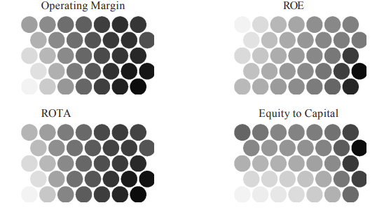
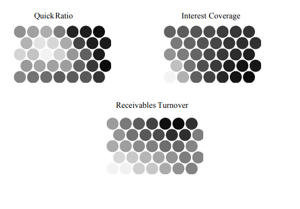

ACKNOWLEDGMENTS
The financial support of TEKES (Grant Number 40943/99) and the Academy of
Finland is gratefully acknowledged.
REFERENCES
- Adriaans, P. & Zantinge, D. (1996). Data mining.. Boston, MA: AddisonWesley Longman.
- Alhoniemi, E., Hollmén, J., Simula, O., & Vesanto, J. (1999). Process monitoring and
modeling using the self-organizing map.Integrated Computer Aided Engineering,
6(1), 3-14
- Ambroise, C., Seze, G., Badran, F., & Thiria, S. (2000). Hierarchical clustering of self�
rganizing maps for cloud classification.Neurocomputing, 30(1), 47-52.
- Back, B., Sere, K., & Vanharanta, H. (1997). Analyzing financial performance with self�
organizing maps. Proceedings of the Workshop on Self-Organizing Maps WSOM’97,
June, Espoo, Finland: Helsinki University of Technology, 356-361
- Back, B., Sere, K., & Vanharanta, H. (1998). Managing complexity in large data bases
using self-organizing maps.Accounting Management and Information Technolo�
gies 8, 191-210.
- Back, B., Öström, K., Sere, K., & Vanharanta, H. (2000). Analyzing company performance
using Internet data. Proceedings of the 11th Meeting of the Euro Working Group
on DSS,June, Toulouse, France: IRIT, Université Paul Sabatier, 52-56.
- Becanovic, V. G. M. U. (2000). Image object classification using saccadic search, spatio�
temporal pattern encoding and self-organization. Pattern Recognition Letters,
21(3), 253-263.
- Bendell, T., Boulter, L., & Goodstadt, P. (1998). Benchmarking for competitive advan�
tage. London: Pitman Publishing.
- Chen, D., Chang, R., & Huang, Y. (2000). Breast cancer diagnosis using self-organizing
maps for sonography. Ultrasound in Medicine and Biology, 26, 405-411.
- Corsetti, G., Pesenti, P., & Roubini, N. (1998). What caused the Asian currency and
financial crisis? Part 1: A macroeconomic view. Available online at: http://
www.stern.nyu.edu/globalmacro/AsianCrisis.pdf
- Costea, A., Kloptchenko, A., & Back, B. (2001). Analyzing economical performance of
central-east-European countries Using neural networks and cluster analysis,
Proceedings of the Fifth International Symposium on Economic Informatics,
May, Bucharest, Rumania: Editura Inforec, pp. 1006-1011.
- Eklund, T. (2000). On the application of self-organizing maps in benchmarking – As
applied to the pulp and paper industry. Unpublished Masters Thesis. Department
of Information Systems, Åbo Akademi University, Turku, Finland.
- Eklund, T., Back, B., Vanharanta, H., &Visa, A. (2001). Benchmarking international pulp
and paper companies using self-organizing maps. TUCS Technical Report No.
396, Turku Centre for Computer Science, Turku, Finland.
- Gustafsson, L. (1992). Bäst i klassen: Benchmarking för högre effektivitet. Uppsala,
Sweden: Sveriges Verkstadsindustrier.
- Honkela, T., Kaski, S., Lagus, K., & Kohonen, T. (1997). WEBSOM – Self-organizing maps
of document collections. Proceedings of WSOM’97: Workshop on Self-Organiz�
ing Maps, June, Espoo, Finland: Helsinki University of Technology, 310-315.
- Kangas, J. (1994). On the analysis of pattern sequences by self-organizing maps. Espoo,
Finland: Helsinki University of Technology.
- Karlöf, B. (1997). Benchmarking i verkligheten: De goda förebildernas inspiration till
lärande och affärsutveckling. Borgå: Werner Söderström.
- Karlsson, J. (2001). Financial benchmarking of telecommunications companies. Un�
published Masters Thesis, Department of Information Systems, Åbo Akademi
University, Turku, Finland.
- Karlsson, J., Back, B., Vanharanta, H. & Visa, A. (2001). Financial benchmarking of
telecommunications companies. TUCS Technical Report No. 395, Turku Centre for
Computer Science, Turku, Finland.
- Kaski, S., Kangas, J., & Kohonen, T. (1998). Bibliography of self-organizing map (SOM)
papers: 1981-1997. Neural Computing Surveys, 1, 102-350
- Kaski, S. & Kohonen, T. (1996). Exploratory data analysis by the self-organizing map:
Structures of welfare and poverty in the world. Proceedings of the Third Interna�
tional Conference on Neural Networks in the Capital Markets, October,
Singapore. London, England:World Scientific, 498-507.
- Keaton, D. (1999), Grade profile. Market pulp: Prospects improving with increased
demand, less new capacity. Pulp and Paper International August. Available
online at: http://www.paperloop.com/db_area/archive/p_p_mag/1999/9908/
grade.htm.
- Kiang, M. & Kumar, A. (2001). An evaluation of self-organizing map networks as a robust
alternative to factor analysis in data- mining applications. Information Systems
Research, 12 (2), 177-194.
- Klimasauskas, C. C. (1991). Applying neural networks, Part IV: Improving performance.
PC/AI Magazine, 5 (4), 34-41.
- Kohonen, T. (1997). Self-organizing maps. 2nd ed. Heidelberg: Springer-Verlag.
- Kohonen, T., Hynninen, J., Kangas, J., & Laaksonen, J. (1996). The self-organizing map
program package. Espoo, Finland: University of Technology.
- Lagus, K. (2000). Text mining with the WEBSOM. Acta Polytechnica Scandinavica,
Mathematics and Computing Series No. 110, Espoo, Finland: Helsinki University
of Technology.
- Lehtinen, J. (1996). Financial ratios in an international comparison. Vaasa: Universitas
Wasaensis.
- Martín-del-Brío, B. & Serrano-Cinca, C. (1993). Self-organizing neural networks for the
analysis and representation of data: Some financial cases. Neural Computing and
Applications, No. 1, 193-206.
- Matussek, H., Janssens, I., Kenny, J., & Riannon, J. (1999). The Top 150: A tale of two
halves. Pulp and Paper International, September, 27-39.
- Neural Networks Research Centre (February, 2001), Bibliography of SOM Papers.
Available online at: http://www.cis.hut.fi/research/refs/.
- Nobes, C. & Parker, R. (1991). Comparative international accounting. Cambridge, UK:
Prentice Hall International.
- Öström, K. (1999). Addressing benchmarking complexity with data mining and neural
networks. Unpublished Masters Thesis, Department of Information Systems, Åbo
Akademi University, Turku, Finland.
- Raivio, O., Riihijärvi, J., & Mähönen, P. (2000). Classifying and clustering the Internet
traffic by Kohonen network. Proceedings of the ICSC Symposia on Neural
Computation (NC’2000), May, Berlin, Germany. Reading, UK: ICSC Academic
Press
- Rhiannon, J., Jewitt, C., Galasso, L., Fortemps, G. (2001). Consolidation changes the
shape of the Top 150. Pulp and Paper International, September, 43 (9), 31-41.
- Salonen, H. & Vanharanta, H. (1990a). Financial analysis world pulp and paper compa�
nies, 1985-1989, Nordic Countries. Green Gold Financial Reports, 1, Espoo,
Finland: Ekono Oy.
- Salonen, H. & Vanharanta, H. (1990b). Financial analysis world pulp and paper compa�
nies, 1985-1989, North America. Green Gold Financial Reports, 2, Espoo, Finland:
Ekono Oy.
- Salonen, H. & Vanharanta H. (1991). Financial analysis world pulp and paper companies,
1985-1989, Europe. Green Gold Financial Reports, 3, Espoo, Finland: Ekono Oy.
- Sarle, W. S. (2001), Neural network FAQ, monthly posting to the Usenet newsgroup
comp.ai.neural-nets. Available online at:ftp://ftp.sas.com/pub/neural/FAQ.html
- Ultsch, A. (1993). Self- organized feature maps for monitoring and knowledge of a
chemical process. In Proceedings of the International Conference on Artificial
Neural Networks, 864-867, London: Springer-Verlag.
- Visa, A., Toivonen, J., Back, B., & Vanharanta, H. (2000). A New methodology for
knowledge retrieval from text documents. Proceedings of TOOLMET2000 Sympo�
sium – Tool Environments and Development Methods for Intelligent Systems,
Oulu, Finland: University of Oulu, 147-151.
APPENDIX:
THE FEATURE PLANES OF THE FINAL MAP
Lighter shades indicate high values, and darker shades indicate low values.


Chapter XV
Data Mining in Health
Care Applications1
Fay Cobb Payton
North Carolina State University, USA
ABSTRACT
Recent attention has turned to the healthcare industry and its use of voluntary
community health information network (CHIN) models for e-health and care delivery.
This chapter suggests that competition, economic dimensions, political issues, and a
group of enablers are the primary determinants of implementation success. Most
critical to these implementations is the issue of data management and utilization. Thus,
health care organizations are finding value as well as strategic applications to mining
patient data, in general, and community data, in particular. While significant gains can
be obtained and have been noted at the organizational level of analysis, much attention
has been given to the individual, where the focal points have centered on privacy and
security of patient data. While the privacy debate is a salient issue, data mining (DM)
offers broader community-based gains that enable and improve healthcare forecasting,
analyses, and visualization.
INTRODUCTION
In this chapter, I provide general insight into data mining with emphasis on the
health care industry. My discussion focuses on earlier electronic commerce health care
initiatives, namely community health information networks (CHINs) in three regions of
the United States. From my exploration of the implementation issues that impacted the
success of each case, I offer Figure 1 to illustrate a cluster of factors that capture the
dynamics of these live scenarios.
While my prior work (Payton & Ginzberg, 2001) focused on the information
technology implementation process, here I provide insight regarding the mining of health